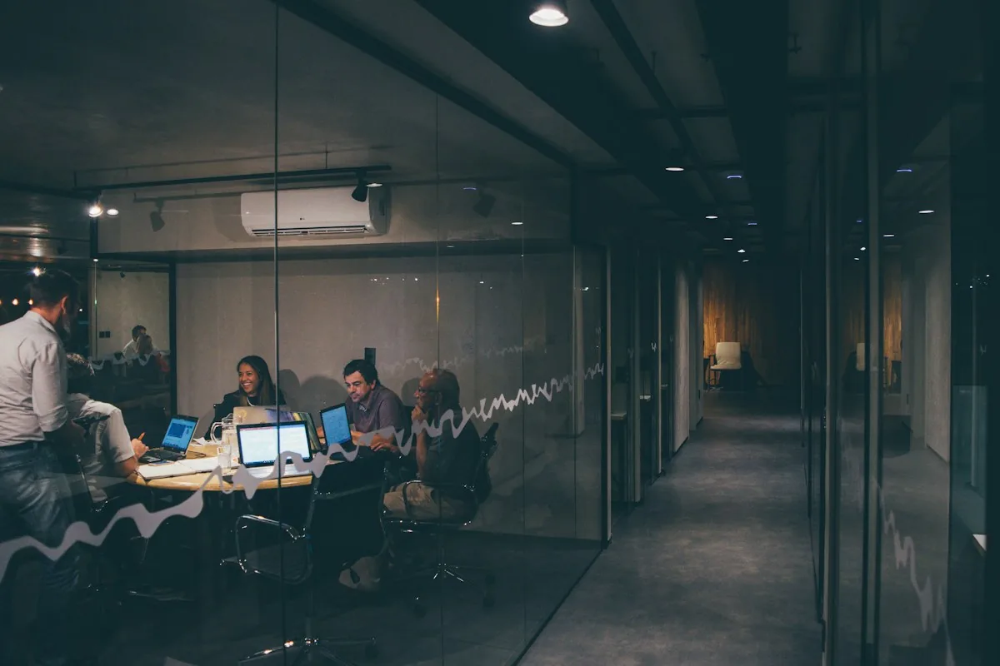

Magno Andrade
Consultoria, mentoria e estratégia empresarial.
Sobre Magno
Magno Andrade.
Consultor, mentor e estrategista empresarial. Fundador da G.U.S.E.
Falar sobre minha empresa Conhecer o perfilAtuação
O que precisa
de atenção hoje?
Escolha o tema da sua conversa.
Organização e gestãoPara uma operação com processos e responsabilidades definidos.
- Organização administrativa
- Governança empresarial
- Estruturação de processos
Gestão financeiraPara acompanhar os números que ajudam a entender a empresa.
- Gestão financeira
- Metas e indicadores
Comercial e expansãoPara rever a estratégia de vendas e o posicionamento no mercado.
- Marketing estratégico
- Plano comercial
- Posicionamento de mercado
- Expansão de negócios
Liderança e equipePara trabalhar a direção da equipe e as rotinas do dia a dia.
- Estrutura de liderança
- Treinamento de equipes
Mentoria e aconselhamento também fazem parte da atuação de Magno. Consulte os formatos disponíveis para o que você precisa.
Como funciona
Da análise
à prática.
Diagnóstico, planejamento, implementação e acompanhamento.
Conversar sobre a consultoria
Conteúdos de Magno
Gestão, na conversa
e no dia a dia.
A leitura dos números da empresa
Ler publicaçãoPor onde posso começar?
Descreva o momento da empresa e o desafio que quer discutir. O formulário abaixo ajuda a preparar essa primeira mensagem.
O trabalho também envolve a equipe?
Sim. Reuniões com líderes e treinamento de equipes fazem parte da implementação.
Como saber os valores e as condições?
Solicite a proposta diretamente a Magno e confirme o escopo, o formato e as condições do atendimento.
Quando minha mensagem é enviada?
Você confere o texto no site e abre o WhatsApp. A mensagem só é enviada quando você confirmar o envio no próprio WhatsApp.
Contato
Vamos falar
da sua empresa?
Conte seu desafio. A conversa começa por aqui.